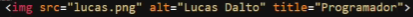

Secciones:
- Concepto de HTML semántico
- Algunas etiquetas de texto
- Algo sobre enlaces
- Listas
- Divs
- Formularios
- Metadatos
- Nav
- Section y Article
- Aside
- Footer
- Tablas
- Alt y title
- Center
- ID
- Iconos
- Formulario 1 - Calculadora
Concepto de HTML semántico
Hay formas correctas o incorrectas de escribir en html, por ejemplo <h1> solo se debe poner una vez ya que posiciona en Google, el <h2> y el <h3> se pueden poner varias veces pero no hay que pasarse, y los <h4>, <h5> y el <h6> se pueden poner las veces que queramos.
Algunas etiquetas de texto
<b>Negrita</b>
<i>Italica</i>
<strike>Tachada</strike>
<small>Chiquita</small>
Algo sobre enlaces
Si queremos que el enlace se abra en otra pestaña en el navegador tenemos que escribir lo siguiente:

Listas
Existen dos tipos de listas, las listas desordenadas sirven para colocar los elementos de la lista con puntos y su etiqueta empieza con <ul> y un ejemplo de una lista con esta etiqueta es la siguiente:
<ul>
<li>Contenido</li>
</ul>
Resultado:
- Contenido
La otra lista se hace casi igual pero tenemos que cambiar <ul> por <ol> y este sería su ejemplo:
<ol>
<li>Contenido</li>
</ol>
Resultado:
- Contenido
La etiqueta <li> no hace falta cambiarla ya que seria como el lapiz o pluma y los <ul> y <ol> serian el papel
Divs
Los divs se crean con esta etiqueta <div> y se usa para separar contenido como por ejemplo separar los productos en una tienda y también se usa para trabajar correctamente con el SEO
Formularios
Para empezar a hacer un formulario necesitamos esta etiqueta <form> y añadirle otra etiqueta adentro que se llama <input>
El name se usa en un lenguaje de backend y funciona como un identificador, ya que aparte de que el form tenga muchos input también sirve para que el servidor escoja algún dato que necesite de los input.
El type determina qué tipo de input es, si es de texto, de contraseña, de número, o email entre otros.
Pero aun hay mas, si ponemos al input required=”” no se va a poder enviar la información al servidor (method=“post”) a menos que tengamos todos los campos completados, como cuando una página dice “Oye pendejo te falto completar una parte de esta madre”, pero es mejor poner el required en el backend porque si no con el inspeccionado puede quitar eso y dejar informacion incompleta.
El textarea sirve para poner un campo de texto más grande pero es similar a un input y si le añadimos readonly=”” el usuario no podrá escribir nada ahí, solo el texto que decidimos poner en el código.
Y para enviar el formulario tenemos que poner la última etiqueta antes del form, y eso creará un botón que dirá “Enviar” dependiendo del idioma local.
Metadatos
Los metadatos sirven para describir la información de la página web sobre que trata y de quien la creo o si tiene copyright, es como la información de la información, y se usa en la etiqueta <head> y para usar uno hay que escribir <meta>
- El primer meta sirve para que la página acepte los acentos y otros caracteres especiales.
- El segundo sirve para poner palabras claves, y si una persona busca alguna de esas palabras google o el buscador va a mostrar la página.
- El tercero como su nombre lo dice sirve para hacer una descripción de la página
- El cuarto sirve para poner el autor de la página
- El quinto sirve para poner si la página tiene copyright
- La ultima le indica al buscador si la página es indexable y si queremos que no sea indexable hay que poner noindex.
Nav
Para empezar a hacer un nav primero tenemos que crear el encabezado osea el <header> el header es como una presentación de qué trata la página el nav va dentro del header y el nav es el menú principal de cualquier página web, como el menú principal de youtube donde está el logotipo, la barra de busqueda, subir vídeo, mi cuenta etc. Y para ponerlas se utilizan listas desordenadas y en las listas donde están los <li> tenemos que poner los enlaces (El Nav y el Header debe de ser igual en todas las páginas que creemos)
Section y Article
Una vez que tengamos el header y el nav, si la página es de un artículo de algún tema o algo, no tenemos que seguir poniendo <h1> o <p> o otras etiquetas, primero tenemos que escribir <article> pero también tenemos que poner <section> adentro y sirve por si vas a poner más artículos juntos, pero se tiene que poner obligatoriamente no importa si solo es uno.
Aside
El Aside <article> sirve para poner a un lado de la página contenido extra y representa una sección de una página que consiste en contenido que está indirectamente relacionado con el contenido principal del documento.
Footer
El footer es el pie de página y sirve para decir si la página tiene copyright o poner las redes sociales de los creadores y básicamente solo es eso.
Tablas
Las tablas en html son como las que se hacen en word o en excel, las tablas tienen columnas y filas, y para crear una tabla necesitamos la etiqueta <table> y otras dos, la segunda es <tr> y para definir los capos por fila necesitamos la etiqueta <td>.
Y el resultado sería este:
| Nombre | Apellido | Canal | Seguidores |
| Lucas | Dalto | Todo Tendencias | 9.000 |
Alt y title
Cuando pongamos una imagen es importante poner un alt ya que esto es vital y muy importante para el seo, ya que define como una especie de título.
También podemos poner title para que cuando el cursor esté en la imagen le aparezca el nombre de la imagen.
Center
Como su nombre lo dice la etiqueta <center> centra todo el contenido que esté en medio de esta etiqueta, y lo pondrá en el centro de la página, pero no se recomienda utilizar center, es mejor hacerlo directamente con CSS.
ID
Si no queremos mover la barra de navegación para que el usuario llegue más rápido al contenido al que vino, para eso tenemos que poner un enlace, pero no nos va a dirigir a otra página, nos va a dirigir a otra sección de la página, en enlace debe de tener un #
Y para que nos lleve a la otra sección tenemos que poner un ID a la etiqueta destino, ya que podemos tener 7673535685 etiquetas iguales, pero solo una nos llevará con el id que le pongamos.
Iconos
Para poner un icono arriba en la pestaña de la página, tenemos que asegurarnos que la imagen que vayamos a usar tiene que terminar en .ico la etiqueta debe de estar en el <head>.
Formulario 1 - Calculadora
Para crear una etiqueta con un formulario, se necesita usar la etiqueta <form> y otras mas, asi como un archivo de JavaScript. Pasos explicados con respecto a las imagenes:
Primero, hay que incluir un archivo de JavaScript, en la imagen fue nombrado como "kapket.js" luego en el archivo HTML, escribir la etiqueta <form>, y adentro, escribir <label>, que es como una etiqueta para mostrar que se necesita para llenar el primer campo. Luego esscribir el <input>, con el type="number", ya que se trata de una calculadora y no un campo de texto, luego poner el id="numero1", ya que con ese id, JavaScript podra sacar la informacion de dicho input para poder usarla en otra cosa, de igual manera, hay que repetir el proceso con el siguiente input que sera para el siguiente numero, pero con diferente id, porque si no habra problemas al ejecutar el codigo.
Luego, hay que poner la etiqueta para el boton llamada <button>, y el evento onclick, y poner el nombre de lo que JS va a hacer, en este caso, va a calcular el resultado de una suma, asi que se llamara "calcular" (Hay que poner (); despues del nombre elegido) y en medio de la etiqueta, se escribira "Sumar" para que el usuario vea que va hacer ese boton.
Por ultimo, pondremos un <p> y adentro una etiqueta llamada <span> mas el id, el span, va hacer que JavaScript muestre el numero final, es decir, la suma de los dos numeros.
En el archivo JS, iniciaremos una funcion con el nombre que se puso en el evento onclick del boton, en este caso "calcular()" Lo que hace la primera variable llamada "num1" es saber el numero que se uso en el primer input, hay que poner "parseInt" debido a que se esta trabajando con numeros. y poner el ID que se le puso en dicho input, en el primero fue "numero1" junto con .value y hay que repetir el proceso con la segunda variable del segundo input.
La tercera variable hace que se puedan sumar las dos variables anteriores, y se crea como si se fuera a hacer una suma comun y corriente en la consola.
Ya por ultimo, la ultima variable hay que poner el ID que se puso en la etiqueta <span> ya pondra el resultado el archivo HTML, y al final de la linea de codigo, hay que poner el nombre de la variable que hace la suma, para mostrar la informacion almacenada en dicha variable.
Resultado: